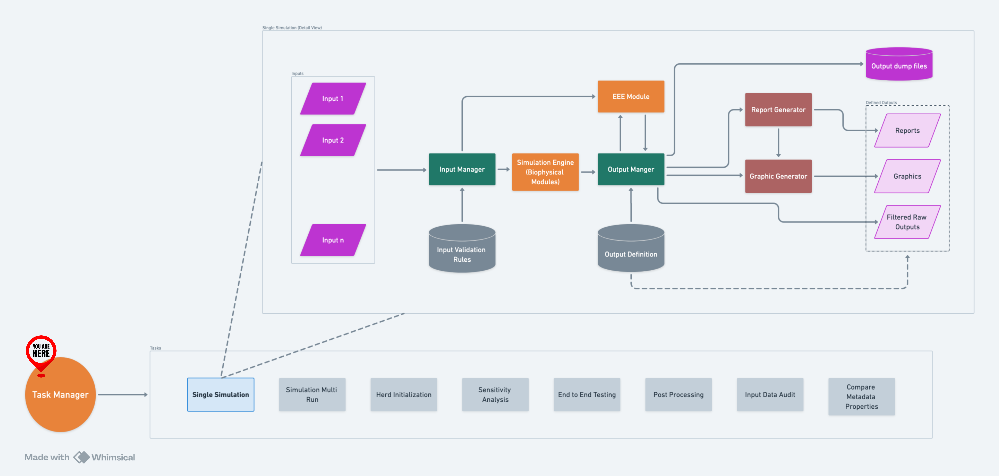

Task Manager#
Overview#
Task Manager is a robust tool designed to automate and optimize the execution of multiple tasks in parallel within RuFaS. It orchestrates complex workflows, manages resource allocation, and efficiently handles task execution based on user-configured specifications.
How It Works#
Task Manager operates by utilizing the Input Manager to fetch and interpret configurations that specify the properties and behavior of tasks. This setup allows for detailed customization including parallel processing settings, task-specific parameters, and output management. Tasks that involve multiple simulation runs, like Sensitivity Analysis and End-to-End Testing, are first expanded into single simulation tasks, simplifying management and execution.

A high-level flow of IM within RuFaS.#
Input Configuration#
parallel_workers: Specifies the number of worker processes that should run in parallel, facilitating efficient use of computational resources.export_input_data_to_csv: A boolean value that indicates whether to extract all the input data values (for all input variables from JSON input files) for each task and combine them into a single CSV file for side-by-side comparison.input_data_csv_export_path: Ifexport_input_data_to_csvis set toTrue, this variable specifies the output path for the result CSV file; otherwise, the value of this variable will be ignored. If the value is not specified and the user has turned on this feature, the default path"output/saved_input_data/"will be used.input_data_csv_import_path: Ifexport_input_data_to_csvis set toTrue, the user can choose to pass in a CSV output from the previous runs to be combined with the outcome from the current simulation run for side-by-side comparison.tasks: A list of tasks with specific configurations for execution. Each task includes:task_type: Identifies the type of task (e.g., simulation, analysis, initialization).metadata_file_path: Path to the metadata JSON file, which provides necessary data for the task.properties_file_pathandcomparison_properties_file_path: Paths to two metadata properties files, which are compared when running aCOMPARE_METADATA_PROPERTIEStask.output_prefix: Base name for output files generated by the task.log_verbosity: Level of detail in logging output (errors, warnings, etc.).variable_name_style: Formatting style for variable names in output files.exclude_info_maps: Boolean to exclude info maps from output.init_herd,save_animals,save_animals_directory: Controls for initializing data sets and saving results.filters_directory,csv_output_directory,json_output_directory,graphics_directory,report_directory,logs_directory: Directories for storing various outputs.suppress_log_files: Tells the task whether to write logs and other non-data outputs to files.output_pool_path: Specifies a JSON file path for loading output data for post-processing.random_seed: Provides a random seed for the simulation. If this seed is 0, then a seed will be randomly generated.SA_input_variables: The input variables for Sensitivity Analysis.
Task Types and Their Specifics#
Task Manager supports several distinct task types, each tailored for specific purposes:
HERD_INITIALIZATION: Initializes simulation to generate a stable herd.
SIMULATION_SINGLE_RUN: Executes a single simulation using specified parameters.
SIMULATION_MULTI_RUN: Runs multiple simulations to generate statistically significant results. Automatically changes the random seed.
SENSITIVITY_ANALYSIS: Explores how output variations are affected by changes in input parameters.
INPUT_DATA_AUDIT: Performs validation on input data and generates a CSV file for them.
END_TO_END_TESTING: Ensures all components of a system work together correctly from start to finish.
POST_PROCESSING: Handles data processing after initial output, such as data aggregation or visualization.
COMPARE_METADATA_PROPERTIES: Compares and saves the differences in RuFaS input requirements, as specified by two different metadata properties files.
DATA_COLLECTION_APP_UPDATE: Regenerates Data Collection App input schema using the metadata properties held in the Input Manager, and updates the Data Collection App files in the
DataCollectionAppdirectory to use the new input schema.
Detailed Sensitivity Analysis Settings#
Sensitivity Analysis within Task Manager is to determine the impact of input variables on output results:
sampler: Defines the sampling method used, like “saltelli_sobol” for comprehensive analysis.saltelli_skip,saltelli_number: Configurations specific to the Saltelli sampling method to determine sequence sampling parameters.SA_input_variables: Detailed settings for each variable involved in the analysis, including:variable_name: The name of the variable to be analyzed, has to match with how Input Manager handles inputs.lower_bound,upper_bound: Range within which the variable will be sampled.data_type: Type of data (float or integer) for the variable.
Load Balancing in Sensitivity Analysis#
SA_load_balancing_start, SA_load_balancing_stop: Define the
range for distributing the computational load during sensitivity
analysis, optimizing resource usage across multiple machines.
Finding a good value for parallel_workers#
parallel_workers determines how many parallel tasks should run
concurrently. Ideally, this number should match with how many CPU cores
are available to you. A higher value for this parameter increases the
overall speed; however, it comes with a major drawback: more memory
consumption. Therefore, one should strike a balance between utilizing as
many CPU cores as possible and ensuring that enough memory is available
for all tasks to run. The required memory is a function of simulation
configuration (simulation days and the number of animals have the
highest impact). So, in order to fine-tune parallel_workers for your
application, you need to know (1) the number of available CPU cores, (2)
available memory, and (3) the required memory. To get the answer to
these questions:
On Windows#
Hit the ctrl+alt+delete chord and run Windows Task
Manager. All of the above-mentioned values are available here.
On Mac#
Get a PC and use Windows Task Manager.
On Linux#
If you are a Linux user you already know what you are doing, you don’t need this.
Example input#
{
"parallel_workers": 8,
"tasks": [
{
"task_type": "SIMULATION_SINGLE_RUN",
"metadata_file_path": "input/metadata/default_metadata.json",
"output_prefix": "Task 1",
"log_verbosity": "errors"
},
{
"task_type": "SIMULATION_SINGLE_RUN",
"metadata_file_path": "input/metadata/default_metadata.json",
"output_prefix": "Task 2",
"log_verbosity": "errors",
"random_seed": 42
},
{
"task_type": "SIMULATION_MULTI_RUN",
"output_prefix": "Task 4",
"log_verbosity": "errors",
"random_seed": 42,
"multi_run_counts": 1
},
{
"task_type": "SENSITIVITY_ANALYSIS",
"output_prefix": "Task 5",
"log_verbosity": "errors",
"sampler": "fractional_factorial",
"SA_load_balancing_start": 0,
"SA_load_balancing_stop": 1,
"SA_input_variables": [
{
"variable_name": "animal.herd_information.calf_num",
"lower_bound": 6,
"upper_bound": 10,
"data_type":"int"
},
{
"variable_name": "animal.herd_information.cow_num",
"lower_bound": 98,
"upper_bound": 102,
"data_type":"int"
},
{
"variable_name": "animal.animal_config.management_decisions.breeding_start_day_h",
"lower_bound": 378,
"upper_bound": 382,
"data_type":"int"
}
]
}
]
}